A Windows desktop app in which Claude Code designs test cases from your product backlogs and tests your web application in a built-in browser, step by step, while you review every result before it counts.
Web Testing Assistant lets an AI tester do the clicking while you stay the judge.
The app has three modes, chosen on its start screen, the Launchpad: Test Case Design turns the backlogs of an Excel workbook into test cases; Regression Testing and Smoke Testing run tests in the built-in browser. Test cases from the designer can be handed over to either testing mode.
You describe a test in plain language: the steps to follow and the result you expect. Claude Code opens your web application in the app's own browser, follows the steps, checks what happens and records every step with a status, its reasoning, and, when something is wrong, a screenshot and a ready-to-file bug report. Nothing is final until you review it: you approve, override or send each step back for a re-run. Finished sessions export to Excel, Word, PDF or Markdown.
| Area | Capabilities |
|---|---|
| Test case design | Upload an Excel workbook of product backlogs; Claude writes happy-path and corner-case test cases per backlog from its text and screenshots, with open questions; edit, lock, regenerate, export to JSON, CSV or Excel, or hand them over. |
| Checklists | Manual checklist runs from designed test cases, with Pass, Fail, Blocked and Skipped, notes, screenshots and export. |
| Testing | Scenarios written as numbered steps with an expected result; smoke tests that check a whole page; several test accounts (roles) per session; file uploads; new tabs and print views; accessibility checks. |
| Watching | A live timeline of every action and what Claude saw, with progress and a timer; a banner over the browser while Claude is in control; a Stop button that ends everything at once. |
| Reviewing | Status badges, filters, step cards, screenshots with the failing element marked, editable bug reports, keyboard shortcuts, site notes for the next run. |
| Evidence | Console errors, failed requests and page load times recorded by the app on every step; reports in Excel (Azure DevOps column names), Word, PDF and Markdown. |
| Regression | A scenario library, import from Excel/CSV and Azure DevOps exports, test data variables, run history and comparison with the previous run of the same test, trends per site. |
| Cost and safety | Runs on your Claude subscription (no API key); usage estimate and automatic pause; model per run type; allowed-domain guard; page content treated as data; test passwords kept out of every file the app writes. |
Chapter explains how the app works. Chapters and get you installed and through a first test in about ten minutes. Chapter introduces the Launchpad and the window, chapter covers Test Case Design, and chapters to describe testing in the order you use it. Then come security, plan usage, data and troubleshooting, and chapter is for developers who build or change the app.
Three programs work together on your computer: the app, Claude Code and Playwright MCP.
| Mode | What Claude does | What you do |
|---|---|---|
| Test Case Design | Reads one backlog (text and screenshots) and writes test cases and open questions. No browser, no tools. | Review, edit and hand the test cases over. |
| Regression Testing | Runs your scenarios step by step in the built-in browser through Playwright MCP. | Review every step; run checklists. |
| Smoke Testing | Writes and runs a broad checklist for one page at a time. | Review every check; run checklists. |
The app is where you work: it holds your sessions and results, shows the browser and the live run, and turns
results into reports. Claude Code is Anthropic's command-line agent. The app starts it once per scenario
(claude -p) and gives it a prompt that describes the test, the rules and the result format.
Playwright MCP is the browser toolkit Claude Code uses: it attaches to the app's own browser over its local
debugging port, so the page you see is the page Claude tests.
ANTHROPIC_API_KEY from the
environment of every Claude process, never reads or stores Claude credentials, and shows plan usage only from what
Claude Code itself reports.prompt.md, with the test password
replaced), the Playwright MCP configuration (mcp.json) and, if the session has an upload folder, a copy of its files.trace.jsonl.results.json with all steps so far. The app reads the file every
second, so steps, statuses, screenshots and bug reports appear on the Scenarios tab while the run is still going.| Status | Meaning |
|---|---|
| Pass | The step worked as expected. |
| Fail / Bug | A product defect. Every Fail step comes with a bug report (title, severity, priority, repro steps, expected, actual). Smoke tests call it Bug. |
| Blocked | Could not be checked: a captcha, a page outside the allowed domains, the environment down, missing data. |
| Not run | Planned but not reached. |
| Pending review | Claude's status is there, but you have not reviewed the step yet; it is not final. |
Every step has two statuses: Claude's status, as Claude reported it, and the final status, which is set only by your review. Reports use the final status and show Claude's next to it.
Install two prerequisites once, then run the Setup program.
| What | Details |
|---|---|
| Windows | Windows 10 or 11, 64-bit. About 600 MB of disk space for the app. |
| Node.js 18 or later | Runs Playwright MCP (the browser tools). Install the LTS version from nodejs.org/en/download. |
| Claude Code | Signed in with a Claude Pro or Max subscription. In PowerShell: irm https://claude.ai/install.ps1 | iex, then open a new terminal and run claude once to sign in. Details: code.claude.com/docs/en/setup. |
| Internet | Claude Code needs to reach Anthropic. The application you test can be local (for example localhost) or online. |
pre-release are marked Pre-release there;
see chapter for the version numbers.On start the app checks that Node.js is installed and that Claude Code is installed and signed in. If something is missing, the Check setup window opens once and says exactly what to do; after fixing it, click Check again. You can open it any time from Help → Check setup. Until both are ready, Run batch stays disabled and its tooltip says why.
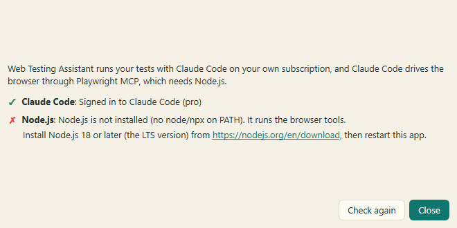
The top strip shows a green dot and Claude Code signed in when everything is ready, and the Launchpad's Test Case Design card shows Ready.
%APPDATA%\Web Testing Assistant until you delete that folder yourself.From an empty app to a reviewed test in about ten minutes.
Steps: Sign in with the test account
Click Profile in the header
Replace the display name with {{random_name}}
Click Save
Expected result: The confirmation reads 'Profile saved. Display name: {{random_name}}'Pick a mode, then work in a window made for it.
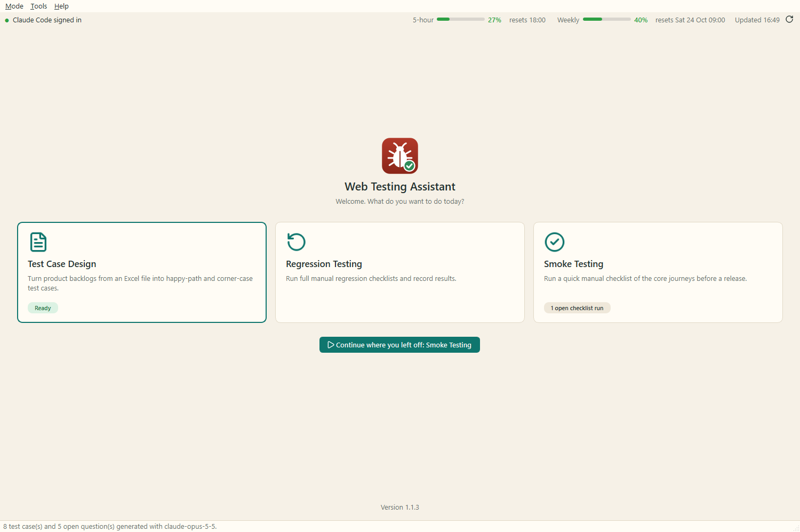
Each testing mode shows only its own review tab, next to Live run, Runs and Checklists. Switch modes with the mode button at the top or the Mode menu (Alt+M); Back to Launchpad is Ctrl+L.
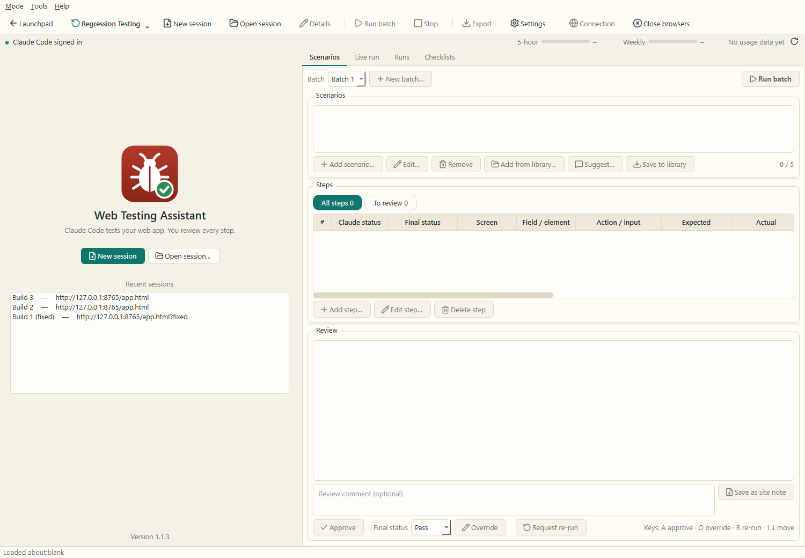
| Menu | Items |
|---|---|
| Mode | Test Case Design, Regression Testing, Smoke Testing, Back to Launchpad, Quit (Ctrl+Q). |
| Tools | Search everything, Trends, Clean up and back up, Settings. |
| Help | Check setup, About Web Testing Assistant. |
Session and browser actions are only used when testing, so they are on the toolbar of Regression and Smoke, not in the menus:
| Toolbar button | What it does |
|---|---|
| New session · Open session | Create a session or open an earlier one (Ctrl+N, Ctrl+O). |
| Details | Edit the open session: URL, domains, accounts, upload folder. |
| Run batch · Stop | Run the batch of the mode's tab (F5); stop at once (Shift+F5). |
| Export | Export the session's report (Ctrl+E). |
| Settings | App settings (Ctrl+,); also in Tools. |
| Connection | The browser's debugging endpoint and a command to connect Claude Code by hand. |
| Close browsers | Stop any run and close every process the app or Playwright started. |
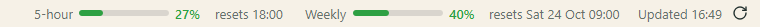
The gauges show what Claude Code reports. They update during every run and generation; the refresh button asks for a reading now with one tiny Claude Code call (Haiku, no tools), which uses a very small part of your plan. After a window resets, its old reading shows as – needs refresh. On a narrow window the reset times move to the tooltip.
Windows notifications come from Web Testing Assistant with its logo when a batch finishes or pauses, when Claude needs your confirmation, and when a test case generation finishes. They stay in the Windows notification center; the taskbar button also flashes until you look.
The app follows the Windows light or dark theme by default (you can fix it in Settings). The light theme is cream white with a teal accent, the dark theme uses brick red, and Fail/Bug statuses keep their own red in both.
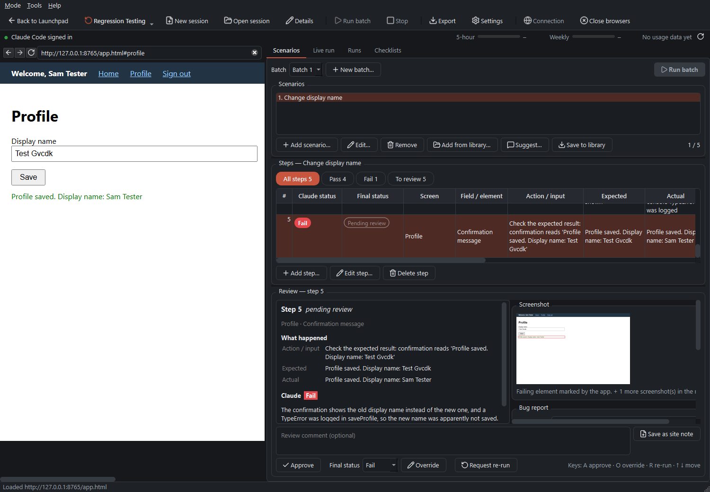
From product backlogs in Excel to reviewed test cases, one backlog at a time.
Claude reads a backlog's text and its screenshots and writes happy-path and corner-case test cases, plus the questions it could not answer from the material. It runs through Claude Code on your subscription, with no tools and no browser; only the backlog being generated (text, pictures and your notes) is sent.
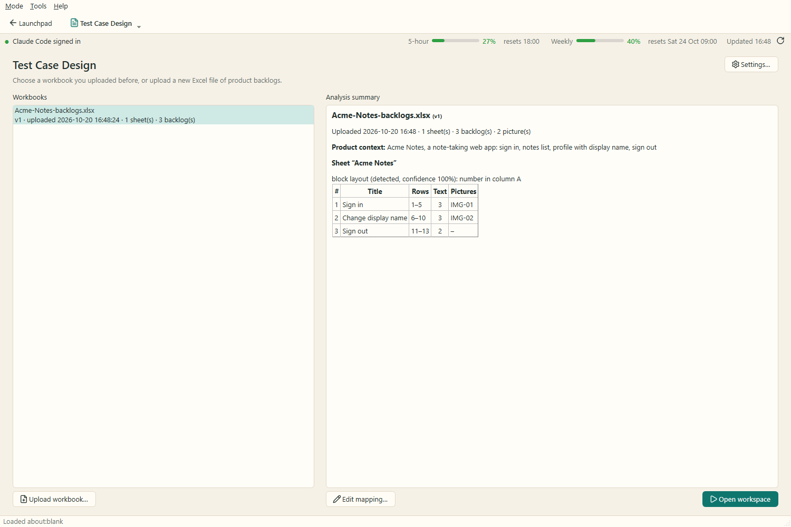
.xlsx (or .xlsm) at once. The summary shows each sheet's
layout (block: a number row with description rows below; table: a header row and one backlog per row),
how confident the detection is, every backlog with its rows and pictures (IMG-01 …), and warnings.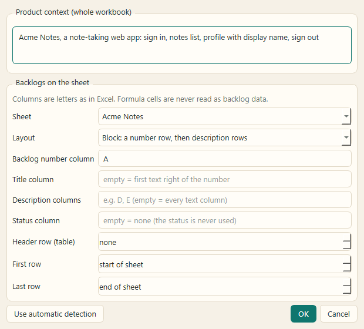
The product context tells Claude what the application under test is, for example "Acme Notes, a note-taking web app: sign in, notes list, profile, sign out". It fills "the product backlogs of …" in the prompt for every backlog of the workbook, so each workbook describes its own product. A workbook without one uses the value saved by an earlier version of the app.
Formula cells and the status column are never sent.
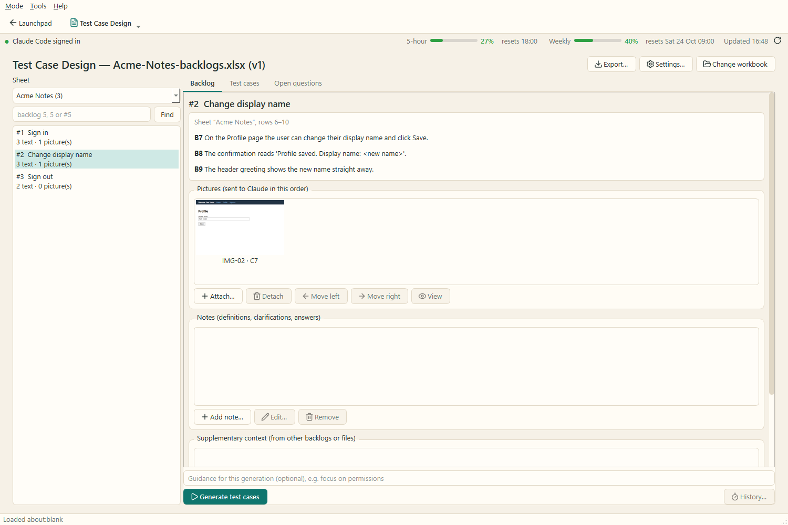
backlog 5, 5, #5 and codes like
BL-5 work. Matches are exact, so 1 never finds 10.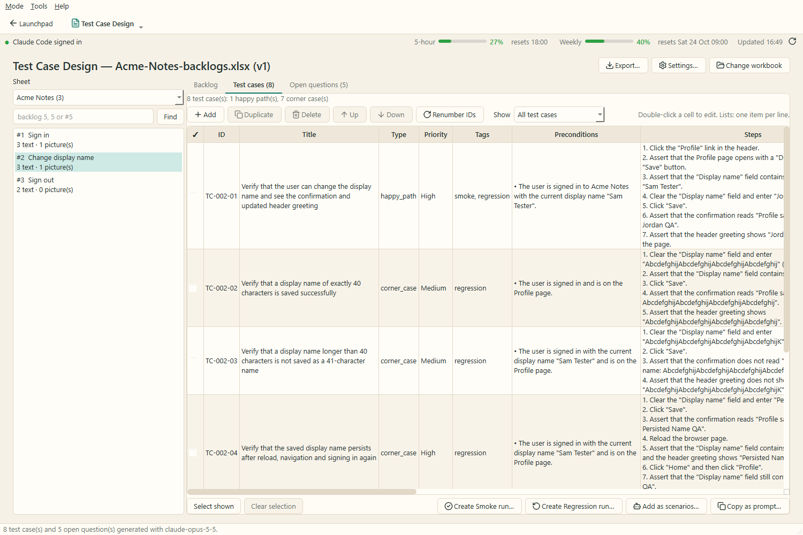
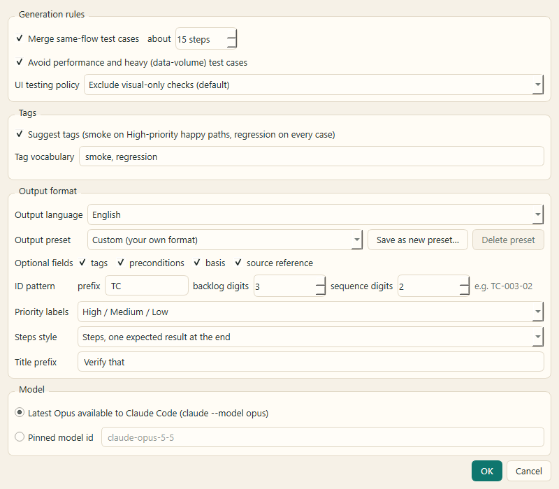
| Setting | Default |
|---|---|
| Merge same-flow cases | On, about 15 steps |
| Avoid heavy cases | On: no load, speed or large-data cases |
| UI testing policy | Exclude visual-only checks |
| Suggest tags | On: smoke, regression |
| Output language | English (more languages later) |
| Output preset | Default (fixed). Custom makes the ID pattern, priority labels, steps style and title prefix editable; Save as new preset… keeps more. |
| Model | Latest Opus, or a pinned model id |
A session is one testing assignment: one application, its accounts and its rules. Sessions are used by Regression and Smoke Testing; create one with New session on the toolbar and edit it with Details.
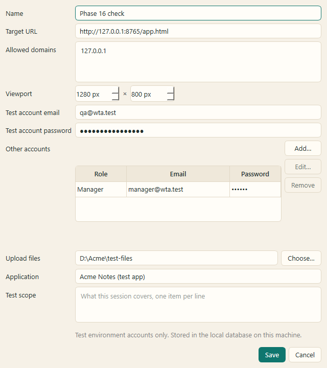
| Field | Purpose |
|---|---|
| Name | For you; for example the build or sprint. |
| Target URL | Where every run starts. |
| Allowed domains | The only hosts the browser may open during a run; the target's host is always included. |
| Viewport | The page size in CSS pixels (default 1280 × 800). |
| Test account | Email and password of a test-environment account. |
| Other accounts | More accounts with a role name, for example Manager or Team B. |
| Upload files | A folder of files Claude may upload. |
| Application, Test scope | Shown in the report's summary. |
Each scenario or smoke page can run as any account of its session (the Run as list appears when there is more than one). The prompt names the role, and Claude signs in as that user. The browser keeps its sign-in between scenarios, so Claude checks first and signs in only when needed; when a scenario tests signing in or out itself, it signs out first and follows the steps exactly.
Without an upload folder, Claude cannot upload anything. With one, the app copies its files into each run folder
(fixtures/; hidden files skipped; at most 25 MB per file and 200 MB per run) and allows the upload tool for
those files only. The prompt lists them, so Claude can pick the right one.
Write tests the way you already do: steps and an expected result.
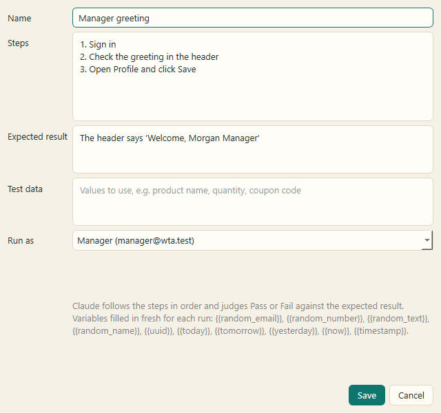
Variables are filled in fresh for each run, with the same value everywhere in that run, so data from earlier runs never clashes. The values used are listed at the top of the run's trace.
| Variable | Example value |
|---|---|
{{random_email}} | wta.kdlspq123@example.com |
{{random_name}} | Test Gvcdk |
{{random_number}} · {{random_text}} | 482913 · hqzmwpxa |
{{uuid}} | 3f2b8c1e-… |
{{today}} · {{tomorrow}} · {{yesterday}} | 2026-10-19 · 2026-10-20 · 2026-10-18 |
{{now}} · {{timestamp}} | 2026-10-19 09:05 · 20261019090512 |
A batch holds up to 5 scenarios. Run batch runs every scenario of the batch that has no results yet or whose steps you sent back for a re-run. A new batch can start once the current one is reviewed; the app asks for confirmation because each batch uses plan.
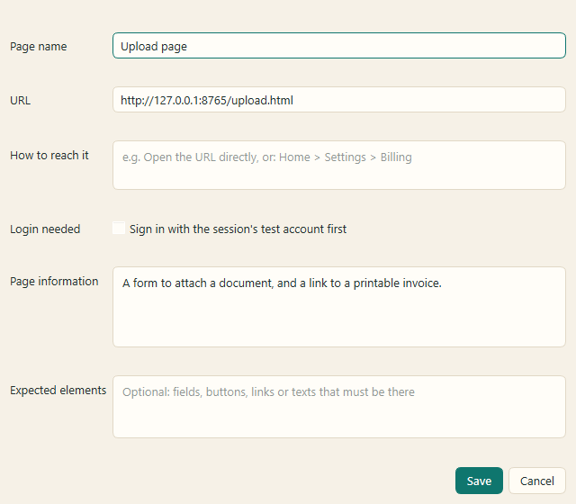
A smoke test checks one page broadly. Describe the page: its URL, how to reach it, whether a login is needed, what is on it and which elements you expect. Claude first writes the whole checklist (usually 10 to 20 checks), then runs the checks in order: the page loads, every expected element is present and labelled, the main controls work, links point to the right places, there are no console errors.
With Include accessibility checks (on by default), Claude adds checks for form labels, button and link names, image alt text and the main heading, and the app measures text contrast on the page after the run (chapter ).
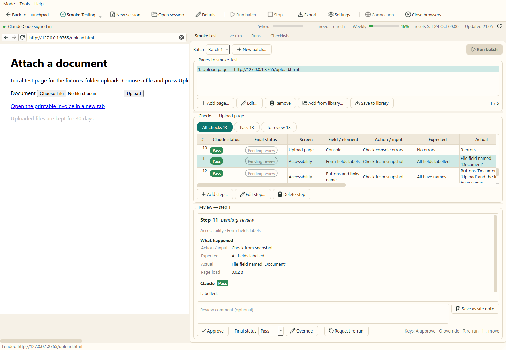
Keep tests you will run again in the library: Save to library stores the selected scenario or smoke page, and Add from library… adds saved ones to the current batch, in any session. Test cases handed over from Test Case Design with Add as scenarios… are in the library too. A scenario added from the library stays linked to it, so a run on the next build is compared with the run on the previous build (chapter ).
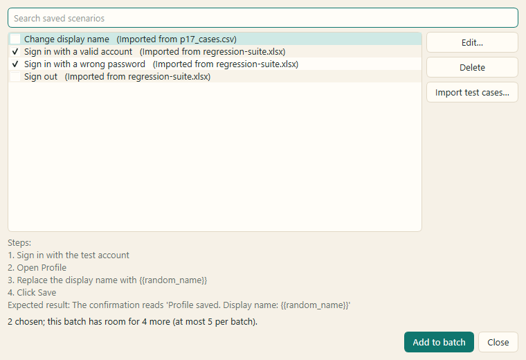
Import test cases… (in the library) reads an Excel (.xlsx) or CSV file. Two layouts are recognised by their column names:
| Layout | Columns |
|---|---|
| One row per test case | Name or Title; Steps (one per line); Expected result; Test data. |
| Azure DevOps export | A Title row followed by one row per step with Step Action and Step Expected. HTML in the cells is removed; the last step's expectation becomes the expected result. |
A preview lists the test cases found before anything is added.
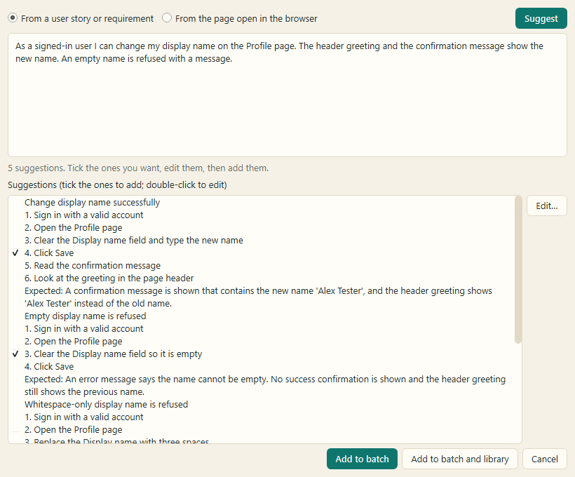
Suggest… on the Scenarios tab asks Claude for 3 to 5 scenarios from a pasted user story or from the text of the page open in the browser. This short request gives Claude no tools at all and is not saved in Claude Code's history; the text is treated as data. Double-click a suggestion to edit it, then add the ticked ones to the batch, optionally to the library as well.
Press Run batch and watch Claude work.
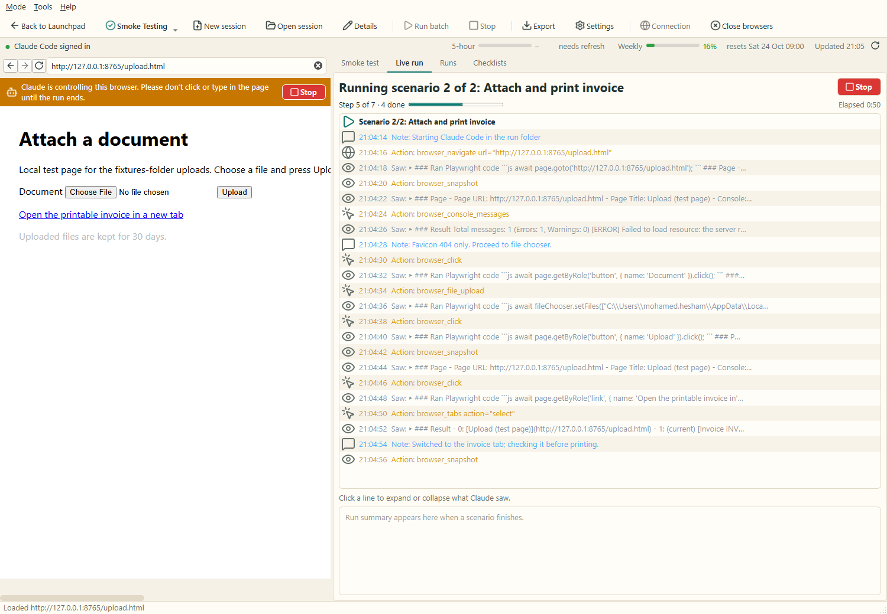
| Control | What it does |
|---|---|
| Stop | Ends Claude Code and everything it started at once; the steps reached so far are kept. |
| Close all browsers | Stops any run and closes every process the app or Playwright started, tracked by process ID. Your own browsers are never touched. |
| Allowed domains | During a run the browser refuses pages outside the session's domains; Claude marks such a step Blocked. |
| Pause before risky actions | Optional (Settings, off by default). Before deleting, sending, paying or another irreversible action, Claude stops and the app asks you to allow or decline; the run then continues. |
| Pause at the usage limit | Before each scenario after the first, the batch pauses and asks you once your 5-hour usage has reached the limit (80% by default). |
When the page opens a new tab or pop-up (a document, an invoice), it appears in its own window; Claude switches to
it with the tabs tool, checks it and closes it. When the page prints during a run, the app saves the printout as
print-1.pdf in the run folder, and Claude reads it to check it.
Nothing counts until you have looked at it.
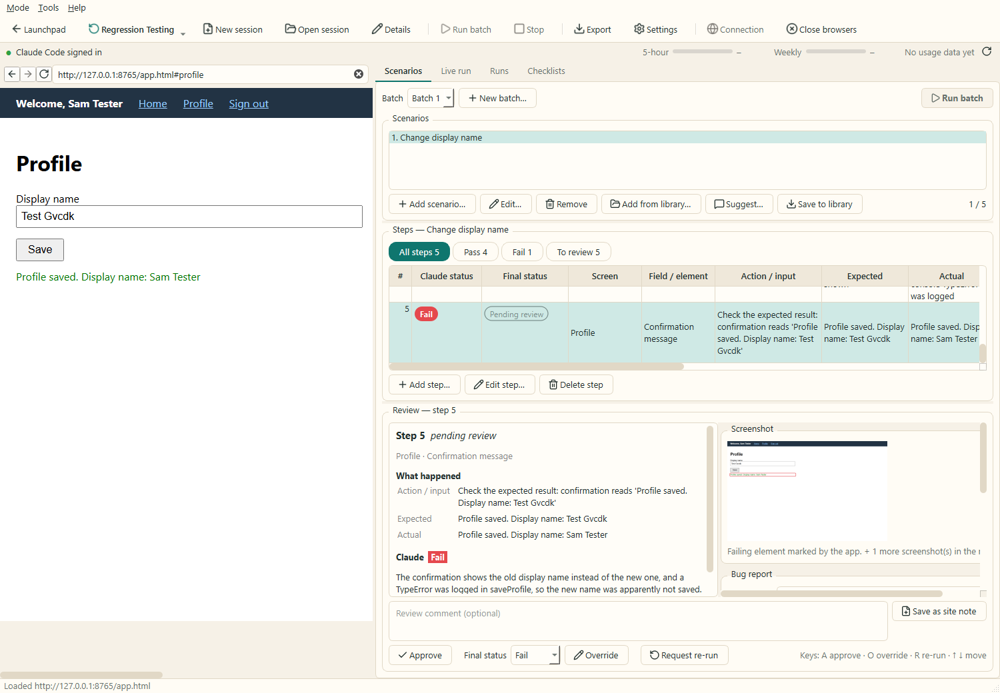
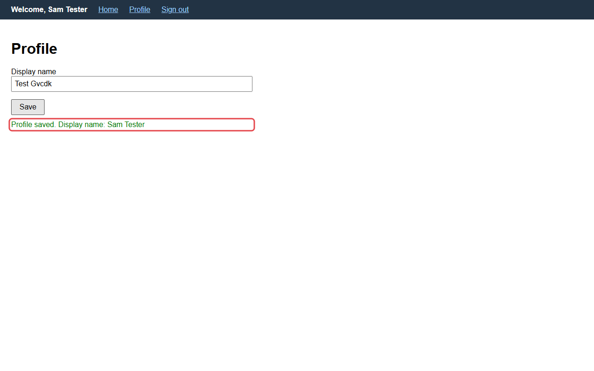
| Action | Key | Effect |
|---|---|---|
| Approve | A | Claude's status becomes the final status. |
| Override | O | Sets the final status chosen in the list; Claude's status is kept next to it. |
| Request re-run | R | Sends the step back; its scenario runs again on the next Run batch. |
| Next / previous step | ↓ ↑ | Move through the steps shown by the filter. |
Keys work while the step table or a button has focus, never while you type. An optional comment is saved with each decision.
Save as site note keeps your comment as a note for the site (the host name). Notes are added to the prompt of every following run on that site, for example "The coupon field needs a second click". They come from you, so Claude follows them; you manage them on the Runs tab.
Designed test cases, run by you, with the results recorded.
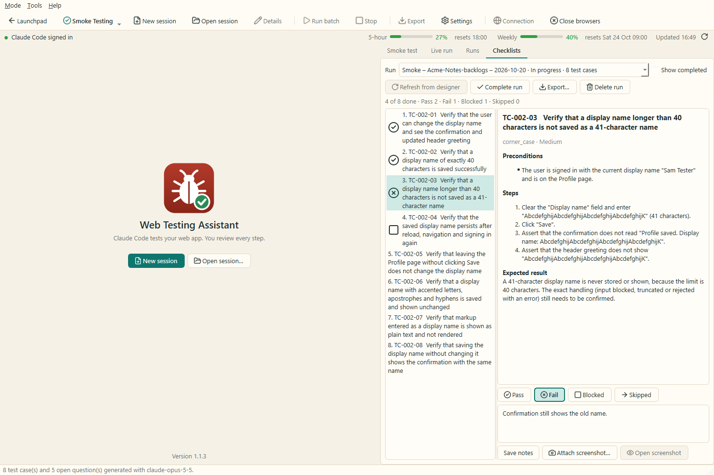
Every run is kept: what Claude did, what it reported and what the page did.
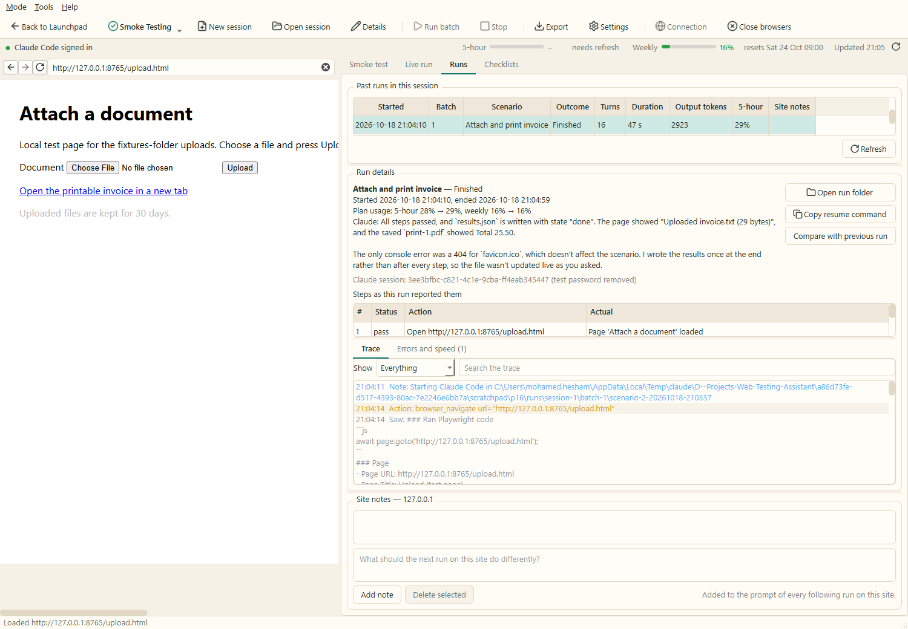
What the app itself saw on the page during the whole run, including steps that passed: console errors and warnings, uncaught JavaScript errors, failed requests (HTTP 400 and above, or failed), page load times (slow from 3 seconds) and, for smoke tests, low text contrast. This uses no plan.
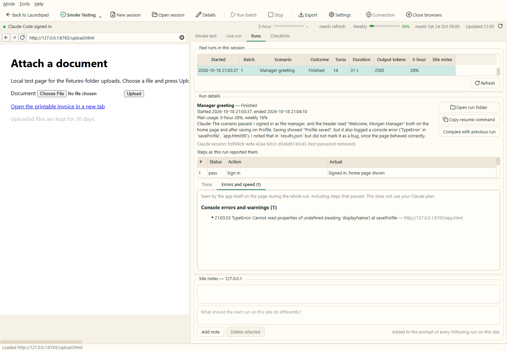
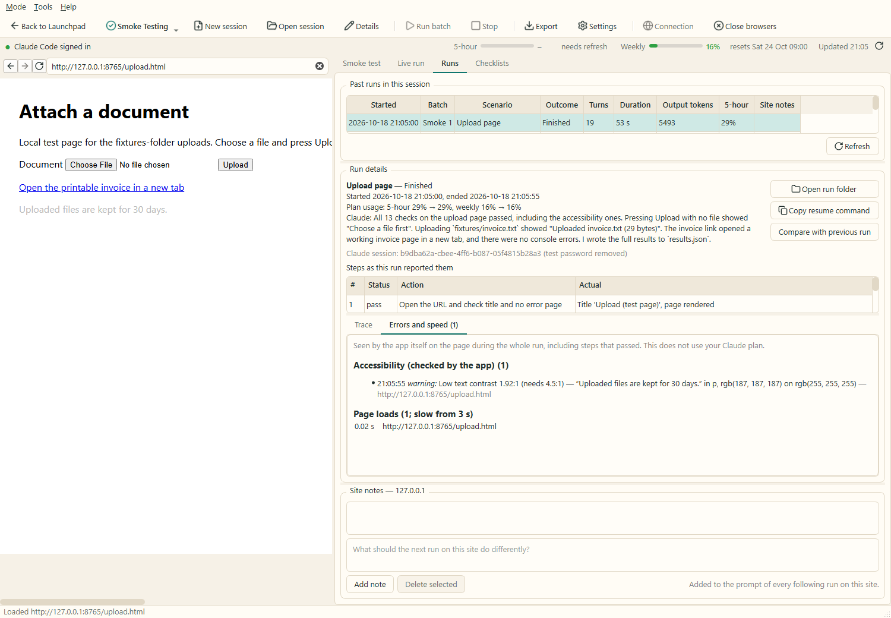
The previous run of a test is the latest earlier run of the same scenario or, for scenarios added from the library, of the same library item in any session: one session per build compares build with build. Steps are matched by their words, then by position.
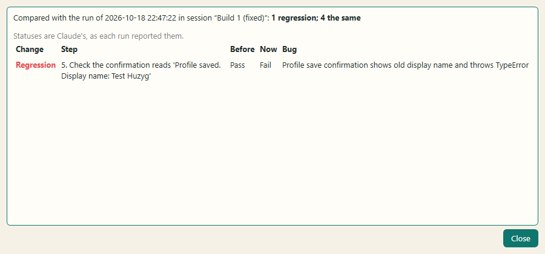
The live run summary shows the same comparison after each scenario, and the batch notification mentions regressions.
Hand results over without retyping them.
Export on the toolbar (Ctrl+E) exports the open session in the default format from Settings; choosing a file name with another extension picks that format.
| Format | Contents |
|---|---|
| Excel | Summary, Results and Bugs sheets with screenshots. The Bugs sheet uses Azure DevOps / TFS column names (Work Item Type, Title, Repro Steps, Severity, Priority, Tags) for import. |
| Word, PDF | The same report as a document: session details, counts by status, scenarios with their steps, results, and every bug with its screenshots. |
| Markdown | A folder with SUMMARY.md (test information, scope, results per test case, overall result, bugs found, attachments), one BUG-NNN-title.md per bug, and the screenshots. |
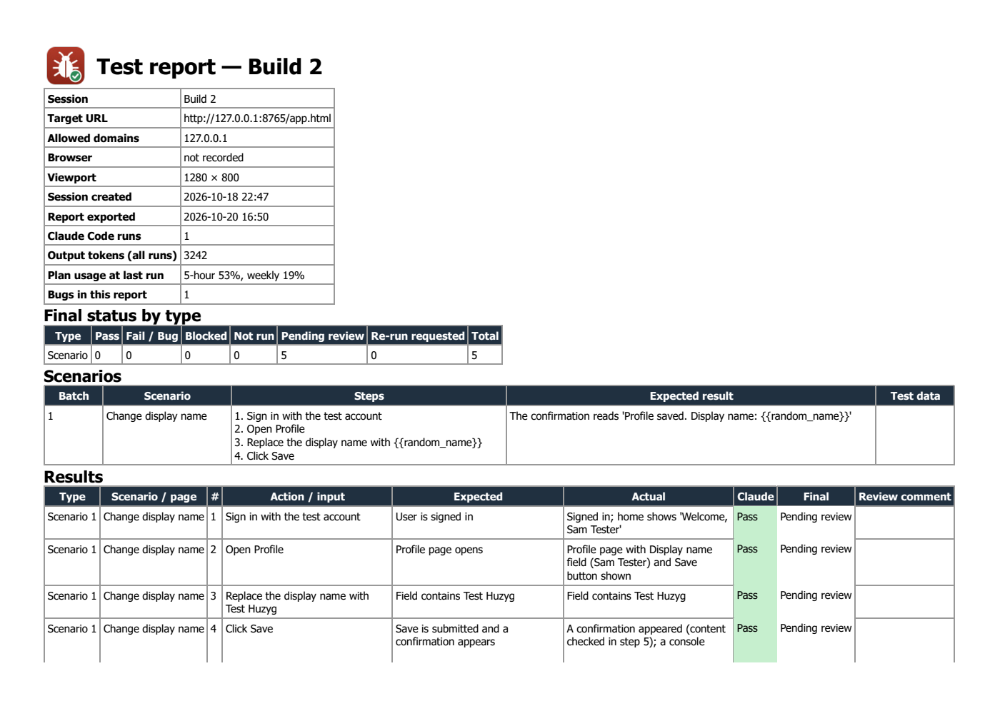
Reports use your final status and show Claude's next to it. A bug is left out when you reviewed its step as anything other than Fail; unreviewed bugs are included and labelled. Test passwords never appear; the account email may.
Tools → Search everything (Ctrl+Shift+F) searches scenarios, steps, bugs, site notes and the library across all sessions. Double-click a result to open its session, scenario and step.
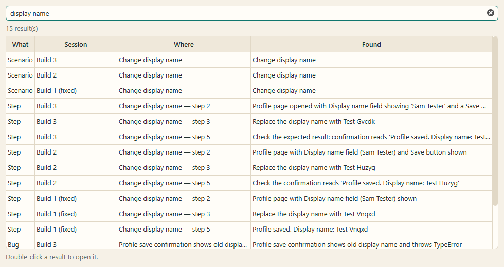
For each site: the pass rate of runs by day and the open bugs per session (a bug is open while the step's status that counts is Fail).
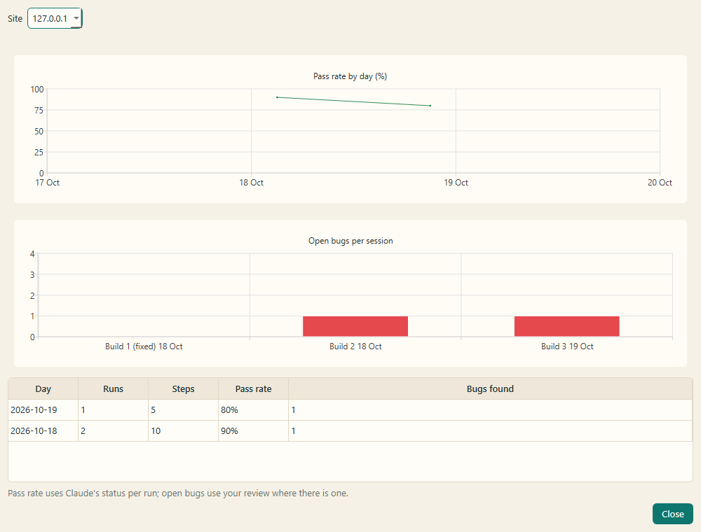
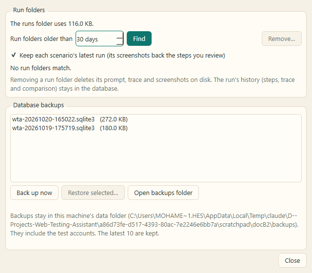
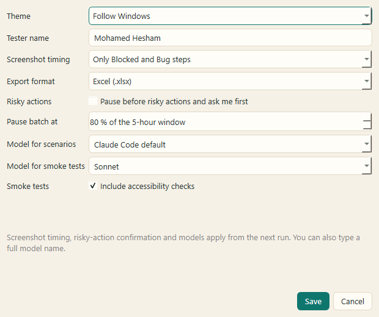
| Setting | Default |
|---|---|
| Theme | Follow Windows (or Light: cream and teal; Dark) |
| Tester name | Empty; shown as Tester in reports |
| Screenshot timing | Only Blocked and Bug steps (or every step, or once per smoke page) |
| Export format | Excel |
| Risky actions | Off: no pause before risky actions |
| Pause batch at | 80% of the 5-hour window (or Never) |
| Model for scenarios | Claude Code default |
| Model for smoke tests | Sonnet |
| Smoke tests | Include accessibility checks: on |
Models accept the aliases Sonnet, Opus and Haiku or a full model name. Changes apply from the next run. Test Case Design has its own settings (section ); the tester name here is also used in its exports.
An AI that clicks around your application needs firm limits. These are built in.
| Protection | How |
|---|---|
| Limited tools | Claude Code gets the Playwright browser tools and file access inside the run folder only. Running JavaScript in the page, closing the browser and installing browsers are denied; uploads only with an upload folder. No shell. |
| Your settings untouched | Claude Code runs restricted: it does not load your own Claude Code settings, hooks or MCP servers. The app never edits ~/.claude/settings.json. |
| Allowed domains | The browser refuses pages outside the session's domains during a run; links to other domains are marked Blocked. |
| Page content is data | Text on a page that tries to instruct the AI is ignored and reported to you as a notice. |
| Test passwords | Stored only in the local database. Removed from prompts on disk, traces, results, exported reports and, after every run, from Claude Code's own saved sessions. |
| Your subscription | No API key is used or stored; ANTHROPIC_API_KEY is removed from Claude's environment. Claude credentials are never read. |
| Processes | Stop and Close all browsers end only processes the app started, by process ID, never by program name. Your own browsers are never touched. |
| Test Case Design | Claude Code gets no tools at all. Only the backlog being generated (its text, its pictures and your notes) is sent; workbooks, test cases and checklist runs stay in the local database. |
| Notifications | To show its name and logo, the app registers them for your Windows user (HKCU\Software\Classes\AppUserModelId\WebTestingAssistant.App); uninstalling removes the entry. |
| Local data | Sessions, results and backups stay on this computer. Nothing is sent anywhere except what Claude Code sends to Anthropic to run the test. |
Tests run on your Claude subscription; the app helps you spend it wisely.
Everything lives in %APPDATA%\Web Testing Assistant (set WTA_DATA_DIR to use another folder).
| Path | Contents |
|---|---|
wta.sqlite3 | Sessions, accounts, scenarios, steps, reviews, bugs, runs, findings, site notes, library; workbooks, backlogs, pictures, test cases, generations and checklist runs |
runs\ | One folder per scenario run (below) |
designer-runs\ | One folder per test case generation (prompt and Claude Code output) |
checklists\ | Screenshots attached to checklist results |
exports\ | Default place for exported reports and test cases |
backups\ | Database backups (latest 10) |
browser-profile\ | The built-in browser's own cookies and cache, separate from your browsers |
settings.json, ui-state.ini | Settings; window layout and the last open session |
usage.json, processes.json | Last plan usage readings; processes the app started |
| File | Contents |
|---|---|
prompt.md | The prompt given to Claude, with the test password replaced |
mcp.json | Playwright MCP settings (attach to the built-in browser) |
trace.jsonl | Claude Code's full output stream, password removed |
results.json | The steps, statuses, bugs and notices Claude wrote |
screenshots\ | Claude's screenshots and the app's marked copies (step-N-highlight.png) |
fixtures\, print-N.pdf | Copied upload files; printouts saved during the run |
| Problem | What to do |
|---|---|
| Run batch is disabled | Hover over it to see why. Usually Claude Code is not signed in or Node.js is missing (Help → Check setup), no session is open, or the browser's debugging port is not ready yet. |
| "Browser debugging port" warning | The port was taken when the app started. Restart the app. |
| Run fails with "Failed to refresh OAuth token" | Another Claude Code window was refreshing its sign-in at the same moment. Wait a minute and run again. |
| Usage shows "–" or "needs refresh" | No reading yet, or the window has reset since the last one. Click the refresh button (↻) or start a run. |
| Generate test cases is disabled or refused | Claude Code must be installed and signed in (Help → Check setup); a backlog with no text and no pictures needs a note first. |
| No Windows notifications | Check Windows Settings → System → Notifications: notifications must be on for Web Testing Assistant, and Do not disturb off. |
| A step is Blocked "outside the allowed domains" | Add the domain to the session (Details on the toolbar) if the test should go there. |
| A batch paused | Your 5-hour usage reached the pause limit. Continue anyway, or stop and run the rest after the window resets. |
| SmartScreen blocks the installer | Choose More info → Run anyway: the installer is not code-signed. |
| Check an installation | Run WebTestingAssistant.exe --self-check report.json: it checks the browser engine, icons, charts and exports, and reports Node.js and Claude Code, without opening the window. |
python -m venv .venv .venv\Scripts\python -m pip install -e . .venv\Scripts\python -m wta
Python 3.12; dependencies: PySide6, SQLAlchemy, openpyxl, python-docx, jsonschema. The project rules are in CLAUDE.md
and the build history and findings in PLAN.md.
| Module (src/wta) | Responsibility |
|---|---|
app.py · launchpad.py | Main window, modes, menus, toolbar, running batches; the Launchpad |
designer/ | Test Case Design: workbook analysis, prompt builder and versioned prompts, generation, validation, workspace, export, hand-over |
checklist_tab.py · db/checklists.py | Manual checklist runs |
usage.py · usage_bar.py · notify.py | Plan usage readings and gauges; Windows notifications under the app's identity |
claude_launcher.py | Everything about starting Claude Code: arguments, tools, environment, sign-in and Node.js checks |
runner.py | One scenario run and a batch: process, stream, results, pause, history |
prompt.py · results.py · stream.py | The prompt; reading results.json; parsing Claude Code's stream |
browser.py · domain_guard.py · cdp.py | Built-in browser, pop-ups, banner; allowed-domain guard; debugging port |
page_monitor.py · accessibility.py · highlight.py | The app's own page checks and marked screenshots |
db/ | Models, sessions, scenarios, runs, library, search, site notes |
export/ | Report model and the Excel, Word, PDF and Markdown writers |
session_files.py | Removing test passwords from Claude Code's saved sessions |
.venv\Scripts\python -m unittest discover -s tests
The tests use a fake claude and never use plan. Local pages for trying the app are in
test_pages/ (a login app with a deliberate bug, a prompt-injection page, an upload page, a printable invoice);
serve them with .venv\Scripts\python -m http.server 8765 --bind 127.0.0.1 --directory test_pages.
.venv\Scripts\python -m pip install -r tools\build-requirements.txt .venv\Scripts\python tools\build_installer.py .venv\Scripts\python tools\build_docs.py
build_installer.py bundles the app with PyInstaller (the exe carries its name and version), runs the bundle's self-check and wraps it with Inno
Setup 6 into dist\installer\WebTestingAssistant-Setup-<version>.exe. The version comes from
src\wta\__init__.py. build_docs.py prints docs\source\documentation.html to
docs\Web-Testing-Assistant-Documentation.pdf.
Every branch carries a version A.B.C in src\wta\__init__.py and pyproject.toml
(both the same):
| Number | Counts | Changes when |
|---|---|---|
| A | merges of pre-release into main | pre-release is merged into main: A + 1 |
| B | merges of a branch into pre-release | a branch is merged into pre-release: B + 1, C back to 1 |
| C | branches created from pre-release since its last merge | the n-th new branch gets C = n + 1 |
pre-release itself always ends in .1. Example from pre-release 1.1.1: the first new
branches are 1.1.2 and 1.1.3; merging one makes pre-release 1.2.1; merging pre-release into
main then makes both 2.2.1. On GitHub, builds of branches and of pre-release are published as
pre-releases tagged v<A.B.C>; only builds of main are full releases.
| Keys | Action |
|---|---|
| Alt+M · Ctrl+L | Mode menu · Back to Launchpad |
| Ctrl+Q | Quit |
| Ctrl+N · Ctrl+O | New session · Open session (Regression, Smoke) |
| F5 · Shift+F5 | Run batch · Stop |
| Ctrl+E | Export report |
| Ctrl+, | Settings |
| Ctrl+Shift+F | Search everything |
| A · O · R | Approve · Override · Request re-run (review) |
| ↑ · ↓ | Previous · next step |
| Term | Meaning |
|---|---|
| Launchpad | The start screen where you choose a mode. |
| Mode | Test Case Design, Regression Testing or Smoke Testing. |
| Workbook | An uploaded Excel file of product backlogs, with its versions (v1, v2 …). |
| Backlog | One numbered item of a workbook: its text and pictures. |
| Product context | A workbook's description of the application under test, used in the prompt. |
| Output preset | The format of generated test cases: fields, ID pattern, priority labels, steps style, title prefix. |
| Checklist run | Designed test cases that you run by hand, recording Pass, Fail, Blocked or Skipped. |
| Pre-release | A build of a branch or of pre-release, published on GitHub for trying out. |
| Session | One testing assignment: an application, its accounts and allowed domains, and its batches. |
| Batch | Up to five scenarios (or smoke pages) run together. |
| Scenario | A test written as steps and an expected result. |
| Smoke test | A broad check of one page; its checks are written by Claude. |
| Run | One Claude Code run of one scenario, with its own folder and history. |
| Final status | The status set by your review; the one reports use. |
| Site note | Your instruction for every following run on a site. |
| Library item | A saved scenario or smoke page, reusable across sessions. |
| Claude Code | Anthropic's command-line agent, run by the app with your subscription. |
| Playwright MCP | The browser toolkit Claude Code uses to drive the built-in browser. |
| CDP | Chrome DevTools Protocol: the local debugging connection to the built-in browser. |